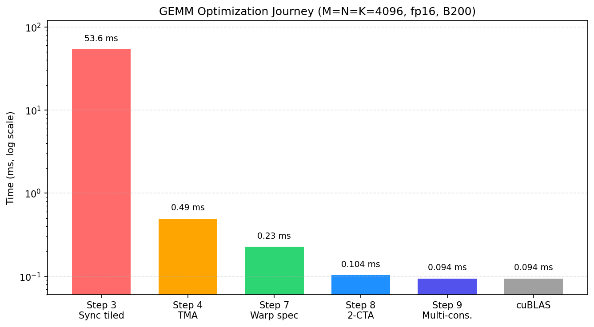

5. Scaling GEMM with Warp Specialization and Clusters¶
The previous chapter built the tiled GEMM path and introduced TMA
pipelining. This chapter switches to the style used by current
tirx-kernels GEMM implementations: SMEMPool, TMEMPool,
Pipeline, PipelineState, CTA clusters, and multiple MMA
consumers.
The optimized kernel still follows the same tile path:
GMEM A/B -> SMEM A/B -> TMEM accumulator -> RF -> SMEM -> GMEM
The difference is scheduling. TMA, MMA, and writeback no longer run as one sequential block of code. They run as separate roles connected by full/empty pipeline barriers.
5.1. Current GEMM Skeleton¶
Before reading the skeleton, map the new helpers to the raw pieces from earlier chapters:
TMEMPoolreplaces manual TMEM allocation and view setup.Pipeline(..., full=..., empty=...)replaces arrays of full/empty barriers.PipelineStatecarries the stage and phase cursor for a software-pipelined ring buffer.
A current optimized GEMM begins by naming the cluster CTA, persistent CTA, warpgroup, warp, and lane:
@Tx.jit
def kernel(A: Tx.Buffer((M, K), a_type),
B: Tx.Buffer((N, K), b_type),
D: Tx.Buffer((M, N), d_type)):
Tx.device_entry()
cbx, cby = Tx.cta_id_in_cluster([CTA_GROUP, 1])
bx = Tx.cta_id([SM_COUNT])
wg_id = Tx.warpgroup_id([WG_NUMBER])
warp_id = Tx.warp_id_in_wg([4])
lane_id = Tx.lane_id([32])
Read those lines as a hierarchy map:
bxchooses a persistent CTA slot.cbxchooses this CTA’s position inside the 2-CTA cluster.wg_idchooses the warpgroup role.warp_idandlane_idchoose the warp and lane inside that warpgroup.
The current implementation allocates shared memory and TMEM through pool objects:
pool = Tx.SMEMPool()
tmem_addr = pool.alloc((1,), "uint32")
tmem_pool = Tx.TMEMPool(pool, total_cols=512, cta_group=CTA_GROUP, tmem_addr=tmem_addr)
smem_pipe = Pipeline(pool, PIPE_DEPTH, full="tma", empty="tcgen05",
init_empty=NUM_CONSUMER)
tmem_pipe = Pipeline(pool, NUM_CONSUMER, full="tcgen05", empty="mbar",
init_empty=CTA_GROUP * 128)
pool.move_base_to(1024)
Asmem = pool.alloc_mma((PIPE_DEPTH, NUM_CONSUMER, BLK_M, BLK_K), a_type)
Bsmem = pool.alloc_mma((PIPE_DEPTH, BLK_N, BLK_K), b_type)
Dsmem = pool.alloc_mma((NUM_CONSUMER, BLK_M, EPI_N), d_type)
pool.commit()
tmem = tmem_pool.alloc((128, 512), "float32")
tmem_pool.commit()
This is the first important change from the simpler GEMM chapters.
Earlier examples used explicit SMEMPool buffers and raw barriers.
Current optimized kernels use:
SMEMPoolto pack SMEM control objects and MMA-compatible tile storage,alloc_mma(...)for SMEM layouts that the TMA and MMA paths understand,TMEMPoolto allocate and slice the 128 x 512 TMEM region,Pipeline(..., full="tma", empty="tcgen05")for SMEM stage ownership,Pipeline(..., full="tcgen05", empty="mbar")for TMEM accumulator ownership.
5.2. Warp Specialization¶
The optimized kernel splits work by role. With WG_NUMBER = 3 and
NUM_CONSUMER = 2:
Role |
Current owner |
Main responsibility |
|---|---|---|
TMA producer |
|
load staged A/B tiles into SMEM |
MMA consumers |
|
issue two MMA streams |
Writeback |
|
read TMEM, cast, stage to SMEM, TMA-store to GMEM |
The TMA producer uses PipelineState as a producer cursor:
tma_cur = PipelineState(PIPE_DEPTH, 1)
@Tx.inline
def tma_load_stage(k_tile):
smem_pipe.empty.wait(tma_cur.stage, tma_cur.phase)
stage = tma_cur.stage
tma_config = Tx.meta_var({
"dispatch": "tma",
"cta_group": CTA_GROUP,
"mbar": smem_full_cta0.ptr_to([stage]),
})
Tx.copy_async(Asmem[stage, 0, :, :], A_cta_tile_0, **tma_config)
Tx.copy_async(Asmem[stage, 1, :, :], A_cta_tile_1, **tma_config)
Tx.copy_async(Bsmem[stage, :, :], B_cta_tile, **tma_config)
if cbx == 0:
smem_full_cta0.arrive(stage, total_tma_bytes)
Read this as: wait until an SMEM stage is empty, issue the TMA loads into that stage, then mark the stage full once the expected bytes have been associated with the TMA completion barrier.
The producer loop is issued by one elected lane in the load warp:
with Tx.thread(Tx.ptx.elect_sync()):
while tile_scheduler.valid():
for k_tile in Tx.serial(K_TILES):
tma_load_stage(k_tile)
tma_cur.advance()
tile_scheduler.next_tile()
elect_sync() is appropriate here because this branch is already a
single warp (warp_id == 3), so it elects one lane from that warp.
5.3. MMA Consumers¶
The MMA side consumes the same SMEM pipe:
mma_smem = PipelineState(PIPE_DEPTH, 0)
ld_phase = PipelineState(1, 1)
For each scheduled output tile, the MMA consumer first waits until its TMEM slot is empty, then streams through K tiles:
tmem_pipe.empty.wait(warp_id, ld_phase.phase)
ld_phase.advance()
accum = 0
for k_tile in Tx.serial(K_TILES):
smem_pipe.full.wait(mma_smem.stage, mma_smem.phase)
stage = mma_smem.stage
Tx.gemm_async(
tmem[:, warp_id * MMA_N : warp_id * MMA_N + MMA_N],
Asmem[stage, warp_id, :, :],
Bsmem[stage, :, :],
accum=accum,
dispatch="tcgen05",
cta_group=CTA_GROUP,
)
accum = 1
smem_pipe.empty.arrive(mma_smem.stage, cta_group=CTA_GROUP, cta_mask=3)
mma_smem.advance()
tmem_pipe.full.arrive(warp_id, cta_group=CTA_GROUP, cta_mask=3)
The important reading rule is: smem_pipe protects the SMEM stages,
while tmem_pipe protects the TMEM accumulator slots. The MMA
consumer waits on both, but for different reasons.
smem_pipe.full.wait(mma_smem.stage, mma_smem.phase)means the current A/B SMEM stage is loaded.smem_pipe.empty.arrive(...)means MMA has consumed that SMEM stage, so TMA may reuse it.tmem_pipe.empty.wait(...)means the writeback role has finished reading the previous accumulator slot.tmem_pipe.full.arrive(...)means the MMA result is ready for writeback.
5.4. CTA Clusters¶
The current optimized GEMM uses CTA_GROUP = 2. Each cluster has two
CTAs, and the cooperative MMA is issued with cta_group=CTA_GROUP.
The cluster-local coordinate is:
cbx, cby = Tx.cta_id_in_cluster([CTA_GROUP, 1])
cbx is 0 or 1. It selects this CTA’s row stripe and stored-B slice.
The TMA producer loads data for the cluster tile, and CTA 0 owns the
shared completion point:
smem_full_cta0 = smem_pipe.full.remote_view(0)
All CTAs in the cluster use the same remote view when they need to coordinate on CTA 0’s barrier storage. The MMA issue path runs only from CTA 0, but the hardware reads operand tiles staged by the cooperating CTAs:
elif warp_id < 2 and cbx == 0:
# MMA warp: CTA 0 issues cooperative tcgen05 MMA.
...
Cluster-wide cleanup uses Tx.cuda.cluster_sync() before TMEM is
released, because both CTAs must be finished with the cooperative
accumulator storage.
5.5. Multi-Consumer Execution¶
The final optimization adds a second MMA consumer. One scheduled cluster tile covers two row stripes in M for the same N span:
NUM_CONSUMER = 2
Asmem = pool.alloc_mma((PIPE_DEPTH, NUM_CONSUMER, BLK_M, BLK_K), a_type)
Dsmem = pool.alloc_mma((NUM_CONSUMER, BLK_M, EPI_N), d_type)
The TMA producer loads two A blocks per stage and one B block per stage:
Tx.copy_async(Asmem[stage, 0, :, :], A_cta_tile_0, **tma_config)
Tx.copy_async(Asmem[stage, 1, :, :], A_cta_tile_1, **tma_config)
Tx.copy_async(Bsmem[stage, :, :], B_cta_tile, **tma_config)
The two MMA consumers are selected by warp_id:
warp_id == 0consumesAsmem[..., 0, :, :]and writes one TMEM slot.warp_id == 1consumesAsmem[..., 1, :, :]and writes the next TMEM slot.
Both consumers reuse the same B tile. That is the point of this optimization: one staged B tile participates in more MMA work.
The scheduler also changes shape. With CTA_GROUP = 2 and
NUM_CONSUMER = 2, one scheduled tile covers 512 x 256 output
elements. The current code uses:
tile_scheduler = ClusterPersistentScheduler2D(
"tile_scheduler",
num_m_tiles=M // MMA_M // NUM_CONSUMER,
num_n_tiles=N // MMA_N,
l2_group_size=8,
num_clusters=SM_COUNT // CTA_GROUP,
)
tile_scheduler.init(bx // CTA_GROUP)
5.6. Writeback¶
Each writeback warpgroup owns one consumer result. It waits for the
corresponding TMEM slot, reads TMEM into registers, casts fp32 to fp16,
stages into Dsmem, and issues TMA stores:
tmem_pipe.full.wait(wg_id, wb_phase.phase)
wb_phase.advance()
Tx.ptx.tcgen05.fence.after_thread_sync()
Dreg_16b = Tx.wg_reg_tile(MMA_N, dtype=a_type)
for no in Tx.unroll(MMA_N // TMEM_LD_N):
Dreg = Tx.wg_reg_tile(TMEM_LD_N)
n_tmem_ld_st = Tx.meta_var(wg_id * MMA_N + no * TMEM_LD_N)
Tx.copy_async(Dreg, tmem[:, n_tmem_ld_st : n_tmem_ld_st + TMEM_LD_N])
Tx.ptx.tcgen05.wait.ld()
Tx.cast(Dreg_16b[:, no * TMEM_LD_N : (no + 1) * TMEM_LD_N], Dreg)
tmem_pipe.empty.arrive(wg_id, cta_id=0, pred=True)
After writeback reads TMEM, tmem_pipe.empty.arrive(...) releases
that accumulator slot for the next MMA. The final GMEM write uses TMA
store and waits for the store group before reusing the staging buffer.
5.7. Current Reading Checklist¶
When reading a current optimized GEMM, follow this order:
Find the parent-scoped coordinates:
cbx,bx,wg_id,warp_id,lane_id.Identify the two main pipes:
smem_pipefor A/B stages andtmem_pipefor accumulator slots.In the TMA branch, check which SMEM stage becomes full.
In the MMA branch, check which SMEM stage is consumed and which TMEM slot becomes full.
In the writeback branch, check which TMEM slot becomes empty and which TMA store drains
Dsmem.For clustered kernels, check that
cta_group,cta_mask, remote barrier views, andcluster_sync()agree withCTA_GROUP.For multi-consumer kernels, follow the consumer index: it chooses the A block, TMEM slot, writeback warpgroup, and output row stripe.
5.8. End-to-End Result¶
Reference numbers on NVIDIA B200, M=N=K=4096, fp16, locked clocks, 1000-iteration timed benchmark:
Kernel |
Time |
Relative speedup |
|---|---|---|
Sync tiled baseline |
53.6 ms |
1x |
TMA pipeline |
0.49 ms |
109x |
Warp-specialized pipeline |
0.23 ms |
237x |
2-CTA clustered GEMM |
0.104 ms |
518x |
Multi-consumer clustered GEMM |
0.094 ms |
570x |
cuBLAS reference |
0.094 ms |
570x |
These numbers are one B200 reference run under controlled conditions. Treat them as a trend check, not a portable peak-performance claim.

Fig. 5.8.1 GEMM Optimization Journey¶
5.9. Exercises¶
In the current Pipeline-based GEMM, which pipeline protects SMEM reuse and which pipeline protects TMEM reuse?
Why does the TMA branch use
PipelineState(PIPE_DEPTH, 1), while the MMA branch usesPipelineState(PIPE_DEPTH, 0)?In the multi-consumer kernel, both consumers use the same B tile but different A tiles. Why does that increase useful work per staged B tile?